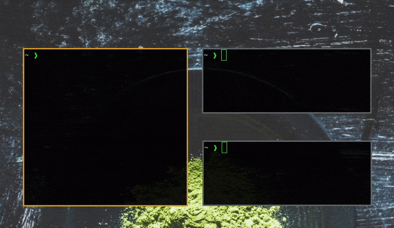

Repository: https://codeberg.org/cyberme0w/dmbm
dmbm is a bookmarking extension for
dmenu, a launcher for tiling window
managers such as i3 or
dwm.
Since it is not bound to any specific browser and instead uses xdotool, you
can use it across multiple browsers, as well as any other program that accepts
cursor input. This also makes it a viable copy-pasta board!
It is written in bash, which makes it easily extensible, and stores bookmarks in plain text, within a folder-hierarchy.
Preview
Open bookmarks in your browser with xdg-open:
Write bookmarked data to your cursor with xdotool
